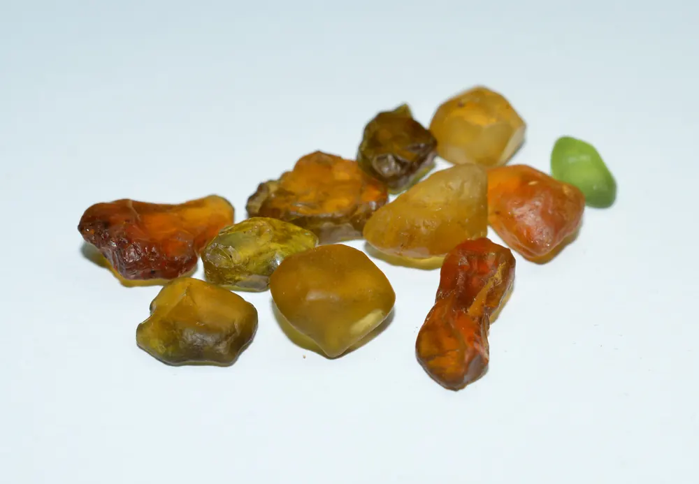

托帕石：帝王色的尊貴
托帕石最貴的不是藍——是「帝王色」的金橙。藍色只是它的市場大眾臉。

核心定義
托帕石（topaz）是鋁氟矽酸鹽（Al₂SiO₄(F,OH)₂），硬度 8、折射率 1.61–1.63、比重 3.5。它顏色多樣：帝王色（金橙）、藍、無色、粉——其中「帝王托帕石」（Imperial topaz，金橙帶紅）是最珍貴的品種。
市場體系：藍色托帕石（瑞士藍、倫敦藍、天藍）是最大宗——但這些藍色幾乎都是「處理色」（輻照＋加熱）；帝王色的天然金橙托帕石才是收藏級。名字裡的「帝王」，是品質的王者。
特徵與分類
| 品種 | 顏色 | 市場 |
|---|---|---|
| 帝王托帕石 | 金橙帶紅 | 最貴稀有 |
| 瑞士藍 | 鮮亮藍 | 處理大宗 |
| 倫敦藍 | 深藍 | 處理大宗 |
| 無色 | 透明 | 親民 |
藍托帕石的藍來自「輻照＋加熱」處理（天然藍托帕石極少）——它是市場誠實揭露的優化。帝王托帕石（金橙）不需處理、天然稀有——它的價格是藍托帕石的數十倍。
科學原理
托帕石的藍色處理：無色托帕石經輻照（產生色心）＋加熱（穩定顏色）→藍色——瑞士藍（淺）、倫敦藍（深）是不同處理參數的產品。天然帝王色的橙：鉻與鐵致色——天然稀有。
鑑定：折射率 1.61–1.63（雙折射 0.010）、比重 3.5、硬度 8——與黃水晶（比重 2.65）區分：托帕石「壓手」得多。與煙水晶同色時，比重一掂便知。
鑑定與鑑別方法
- 掂比重：托帕石 3.5 壓手（vs 石英 2.65）
- 折射儀：1.61–1.63
- 看顏色：帝王金橙 vs 藍處理
- 證書：處理揭露（輻照/加熱）
- 注意：帝王托帕石天然無處理
市場行情與保養建議
行情：藍托帕石親民（每克拉數十至百人民幣）、無色更平；帝王托帕石稀有（頂級每克拉數百至數千美元）——同一個名字，價格差百倍。藍托帕石的「大眾」，帝王色的「尊貴」。
選購：日常選藍托帕石（大顆親民）；收藏看帝王托帕石（天然稀有）——先確認處理狀態，再談價值。
常見誤區
天然托帕石多為無色與金橙——市場上的藍托帕石幾乎都是輻照處理的產物。藍是工藝色，不是天然主色。
硬度 8——僅次於剛玉（9）與鑽石（10），比石英（7）硬。托帕石是「硬漢」，只是怕「劈」（解理完全，撞擊易裂）。
冷知識
它有完全的底面解理——受撞擊可能沿解理面裂開。硬度 8 的托帕石，其實「脆」得很。
實驗室的輻照＋加熱把無色托帕石變藍——你戴的藍托帕石，經過了核工業技術的洗禮。
反直覺觀點
帝王色金橙天然稀有——它的「帝王」之名名副其實；反觀滿街的藍托帕石，多是輻照工藝的產品。
解理完全讓它怕撞——硬度保護它不被刮，解理讓它怕摔。寶石的「耐用」，是硬度與韌性的雙重考驗。